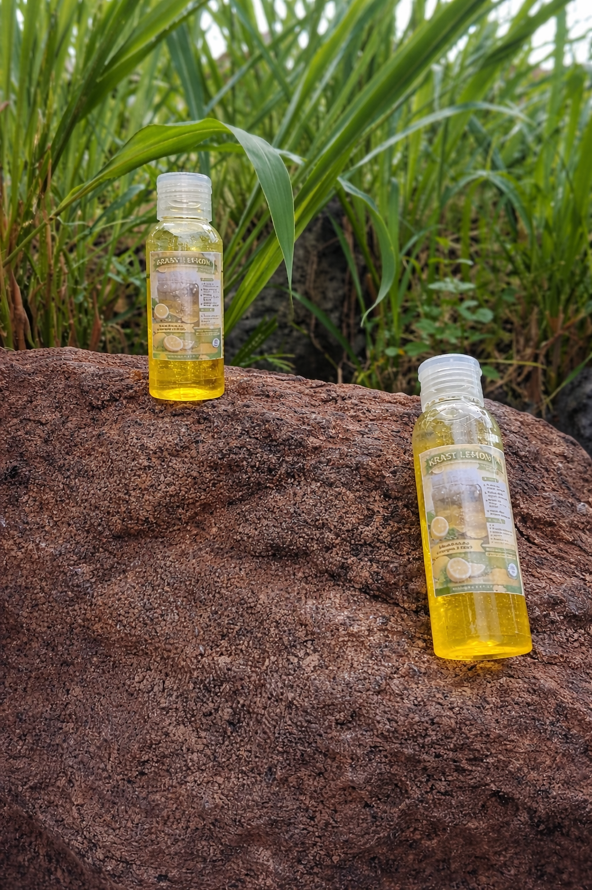
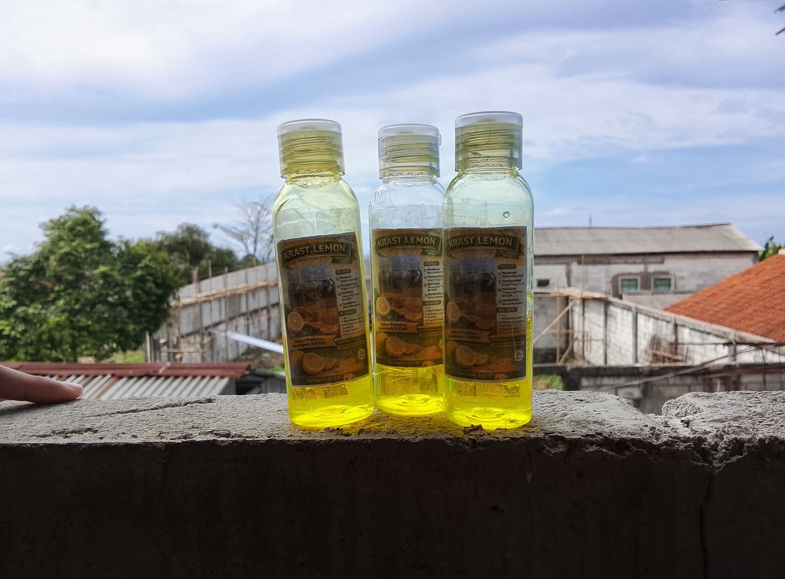
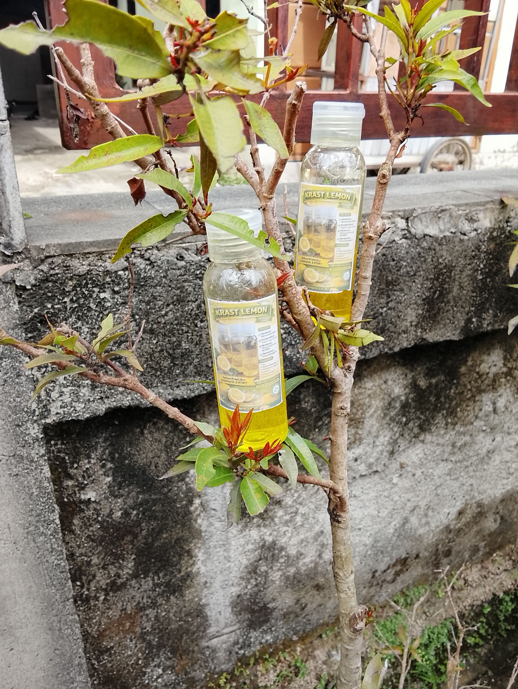
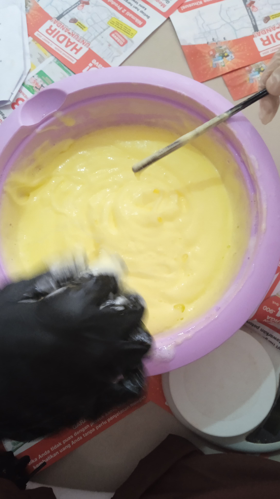
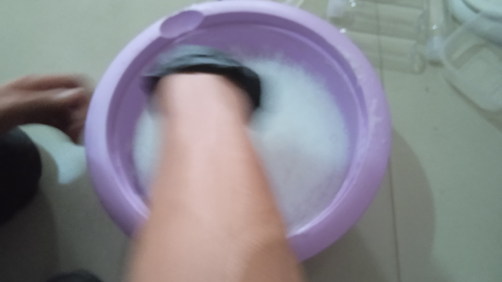
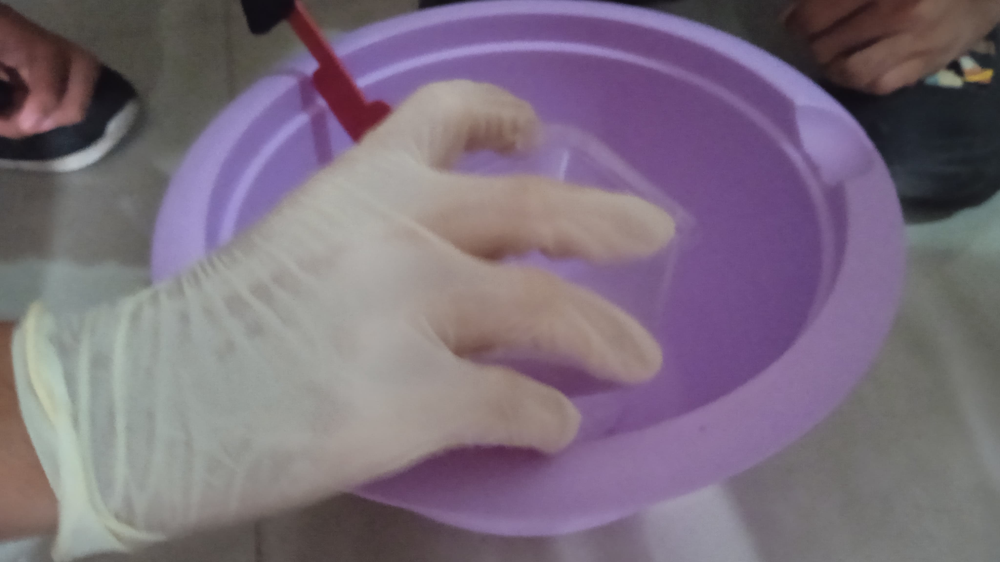
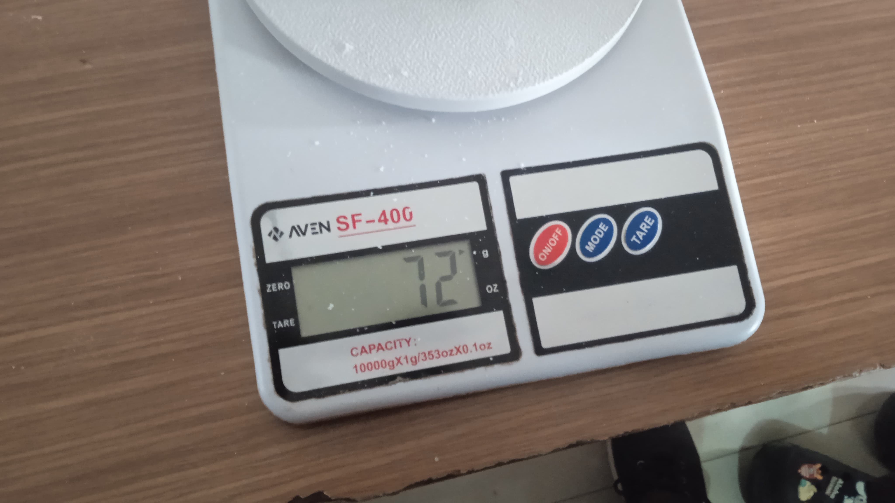
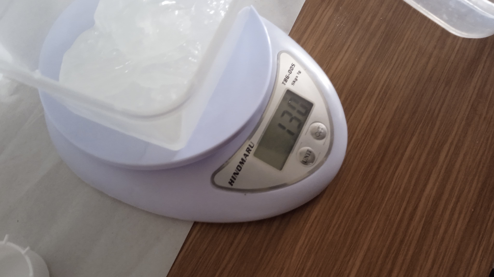
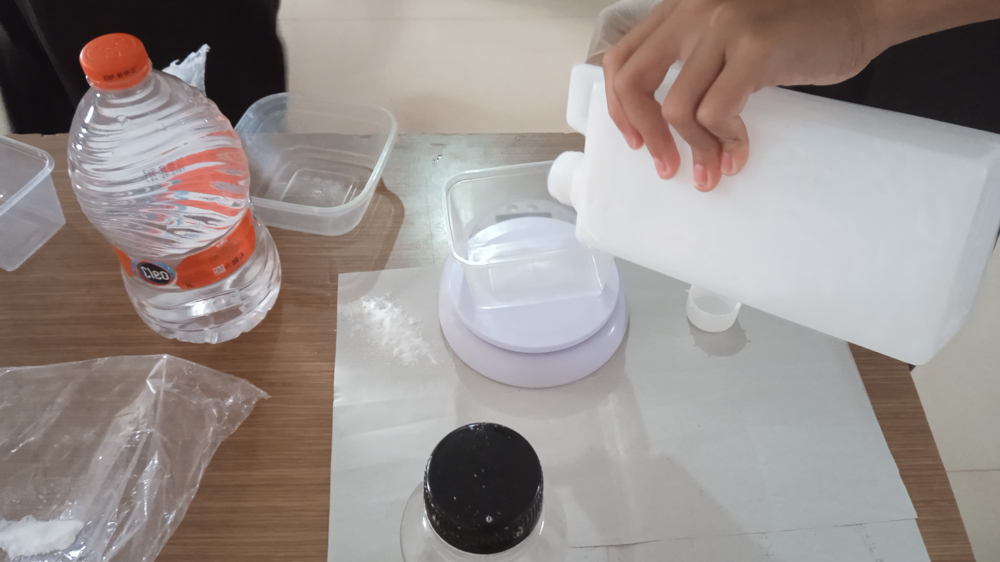
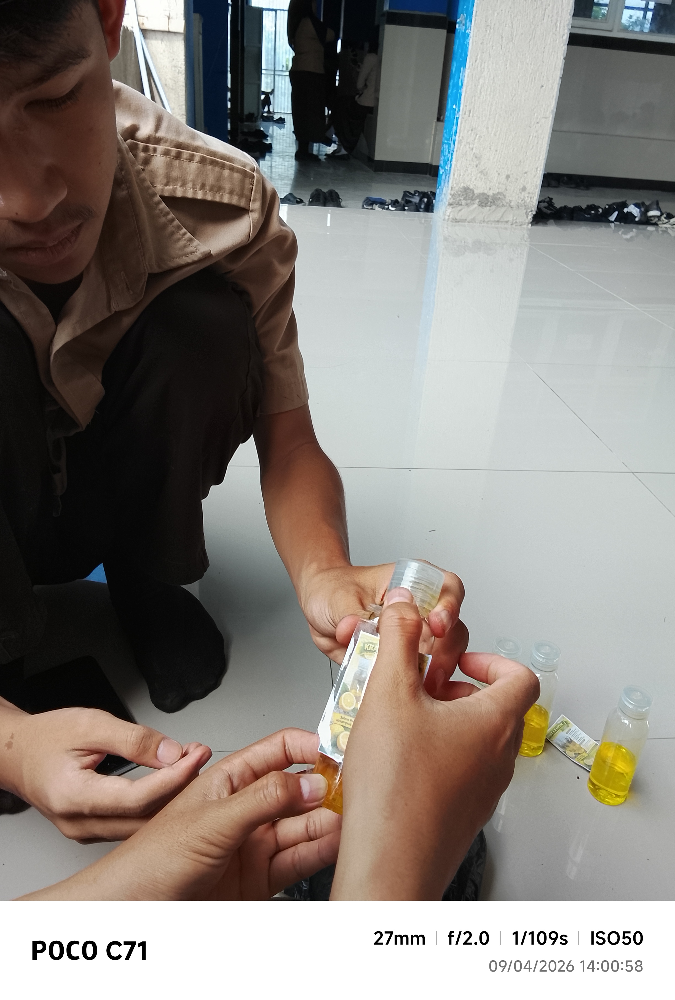

Laporan Pembuatan sabun cuci tangan
Identitas Kelompok
Kelompok 3 Kelompok 1
Anggota:
- 1. Kiki Ardiansah
- 2. M.Teguh Suhardianto
- 3. M.Azmi apriliano
- 4. Satria leviano
- 5. Rivan Ibrahim
1. Penjelasan Produk
Sabun cuci tangan adalah produk pembersih yang digunakan untuk membersihkan tangan dari kotoran, minyak, dan kuman.
2. Alat dan Bahan
Alat:
- Pengaduk Sambal
- sarung tangan
- celemek
- baskom
- 4 Wadah Kecil
- corong
Bahan:
- Texapon
- Garam(NacL)
- Sulfat
- EDTA
- Air Bersih
- Foam Booster
- Gliserin
- BKC
- essence oil
- pewarna makanan
3. Perubahan yang Terjadi
Pembuatan sabun cuci tangan dengan bahan texapon umumnya termasuk perubahan fisika, karena bahan-bahannya hanya dicampur dan dilarutkan tanpa menghasilkan zat baru. Texapon sendiri sudah merupakan bahan aktif sabun, jadi saat dicampur dengan air, pewangi, pewarna, atau garam, yang berubah hanya bentuk dan kekentalannya.
4. Alasan Penamaan Produk
5. Langkah-langkah Pembuatan
- Masukkan texapon sebanyak 120 gram.
- Masukkan garam (NaCl) 30 gram,sulfat 30 gram dan EDTA 2 gram.
- Aduk hingga merata sampai tercampur menjadi putih susu.
- Masukkan air sebanyak 900 ml sedikit demi sedikit (tidak langsung semua).
- Aduk semua hingga tercampur rata dan mengental.
- Jika sudah mengental, tambahkan air sedikit demi sedikit secara terus-menerus jika dirasa terlalu kental.
- Sisakan air sebanyak 100 ml.
- Masukkan foam booster 20 ml,gliserin 10 ml dan BKC 3 ml dan aduk
- masukkan esence oil 10 ml dan pewarna makanan 6 tetes
- Masukkan sisa air 100 ml ke dalam campuran.
- Aduk semua hingga mengental.
- packing ke dalam botol pump jika sudah siap untuk di gunakan
6.hasil produk



7.dokumentasi











